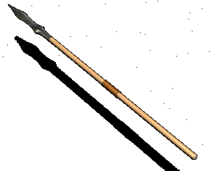

|
Дротик-сулица |
|
| Дротики-сулицы в XII
веке служили в основном вспомогательным
средством поражения врага. Их было очень удобно
использовать в сражениях на пересеченной
местности, а особенно -- в момент сближения с
противником, в рукопашной схватке и в
преследовании. Больше всего было сулиц с удлиненно-треугольными наконечниками, встречались сулицы и с ромбовидной и лавролистной формой. Длина сулиц составляла 15-20 см, а вместе с древком -- от 1м 20см до 1м 50 см. По своему размеру сулица занимала промежуточное положение между копьем и стрелой// |
|
Текст и
иллюстрации (c) 1997 Snowball Interactive Entertainment, Inc. |